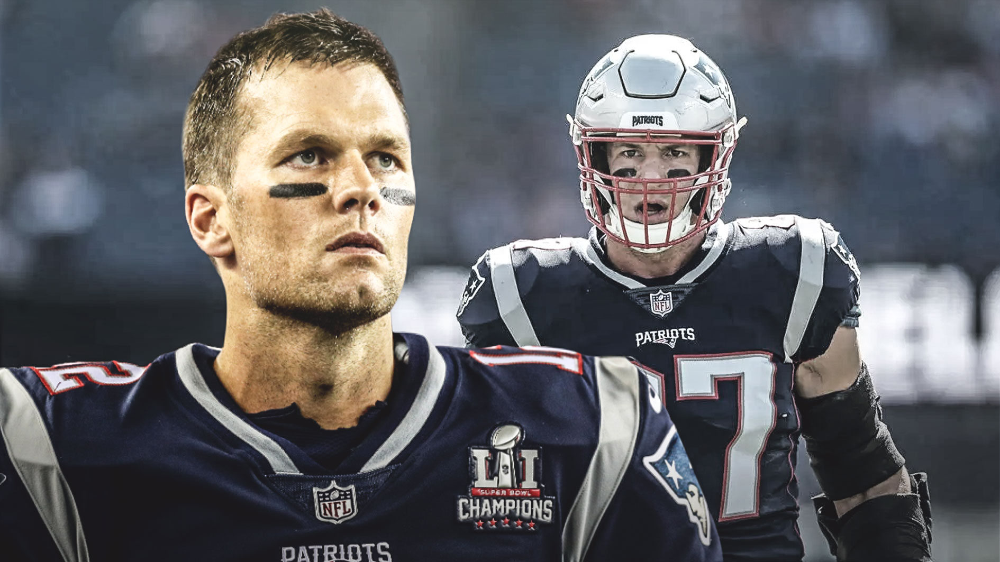
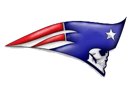
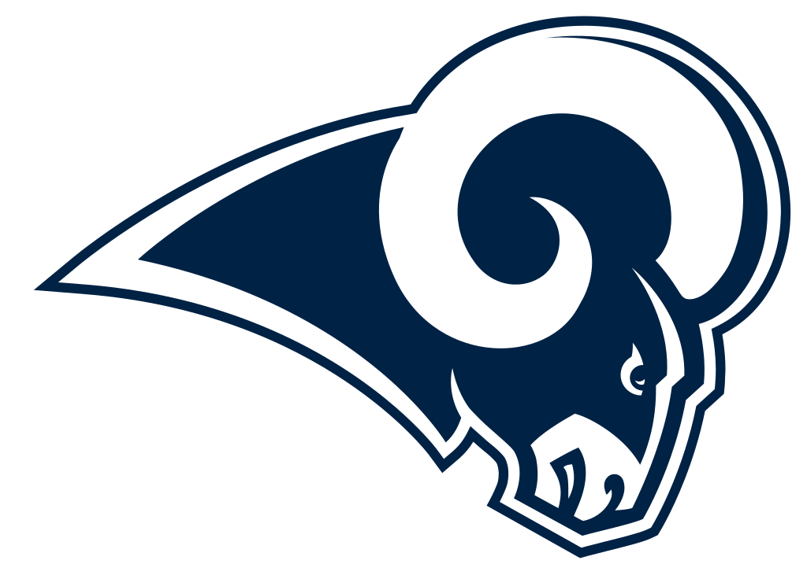
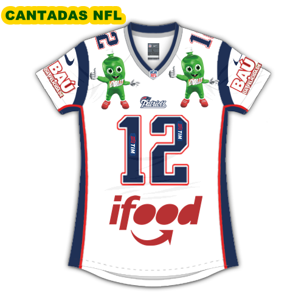

Técnico do Seattle Seahawks quer o fim do 'VAR' da NFL: 'Sinto falta do elemento humano'
“Acabe com isso, ou pelo menos diminua o uso do replay. Eu sei de todas as razões para termos o replay, e a tecnologia abriu um novo mundo para nós chegarmos até aqui. Mas eu sinto falta do elemento humano de confiar nos árbitros para fazer as chamadas no momento e o resto de nós termos que viver com aquilo que eles marcarem”, disse o treinador.

SOBREVIVENDO NOS PATRIOTS AO LADO DE TOM BRADY
Foi durante a primeira temporada de Paxton no New England Patriots, em 2000, que ele fez amizade com outro garoto do sul da Califórnia que teria sucesso na franquia: Tom Brady.
“Temos histórias semelhantes. Os dois são do sul da Califórnia, não fomos recrutados no topo (do draft), e pegamos o mesmo avião indo para o treinamento de calouros. Ficamos juntos e ainda somos amigos hoje em dia”.
ASSISTA AO PRÓXIMO JOGO!


Loja oficial ABERTA!

Videos
Cantinho do Fã
" Esse esporte ai é aquele do marido da Gisele Bündchen?"
"Se é futebol porque se joga com as mãos?"
"Nossa, como tem comerciais isso!"
"Porque o campo é todo riscado?"
"Você dá moral pra esse esporte de um país capitalista."
"Como demora pra acabar esse jogo."
Novidades
QUAL SERÁ O PLANO DO NEW YORK GIANTS? TALVEZ NEM O PESSOAL DA BIG APPLE SAIBA
Matheus Filippi | 15 maio, 2019 | Giants, NFL 2019, Sem categoria | 0 comentários
O New York Giants vem sendo um dos times mais falados no mundo da NFL nesta intertemporada. Infelizmente para os torcedores da franquia, os Blues estão nos holofotes pelo trabalho, digamos, altamente questionável, nos últimos meses.
Em entrevista recente, o dono da equipe, Steve Tisch, afirmou categoricamente que há um plano em curso para recontruir a franquia – algo muito discutido com o general manager Dave Gettleman e o técnico Pat Shurmur. Será mesmo?
De duas uma: ou é algo extemamente complexo, maquiavélico e de difícil compreensão, ou é um plano simplesmente horrível, pois nada do que a equipe vem fazendo ao longo dos últimos meses faz o menor sentido.
Jogos da Temporada
23/09 – 21h20 – Detroit Lions x New England Patriots
30/09 – 14h – New England Patriots x Miami Dolphins
04/10 – 21h20 – New England Patriots x Indianapolis Colts
14/10 – 21h20 – New England Patriots x Kansas City Chiefs
21/10 – 15h – Chicago Bears x New England Patriots
29/10 – 22h15 – Buffalo Bills x New England Patriots